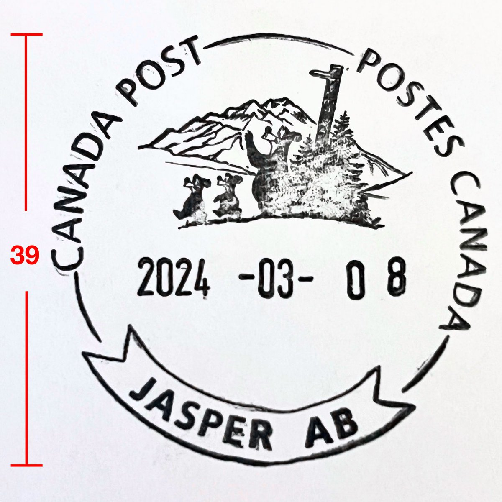

Jasper PO pictorial cancel
Bear family, trees, mountains
- Status
- Active
- Run dates
- ? to present
- Design
- bear family, trees, mountains
- Ink colour
- Black
- Designer
- Unknown
- Post office
- Jasper PO
502 Patricia St
Jasper, AB
T0E 1E0 - Subjects
- animal, bear, mammal, nature, mountain, tree, plant
Collect it by mail. Send your stamped covers, with a stamped return envelope, to the post office address above. How to collect pictorial cancels by mail · en français
 Banff Main POHome of the Ghost Bride
Banff Main POHome of the Ghost Bride Grande Prairie CROTRUMPETER SWAN / CYGNE TROMPETTE
Grande Prairie CROTRUMPETER SWAN / CYGNE TROMPETTE Beaverlodge POBeaver
Beaverlodge POBeaver Red Deer STN PODeer, maple leaves
Red Deer STN PODeer, maple leaves